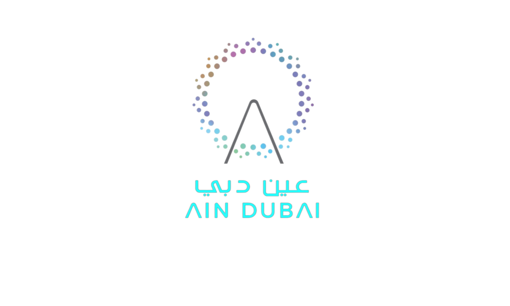
Ain Dubai Plaza Stage — Technical Rider
Document format: classic PDF layout
Technical Rider
This document contains the stage, lighting, audio, and screen technical specifications for Ain Dubai Plaza Stage. The layout is designed to read like a traditional PDF with a contents page and structured titles/subtitles.
Contents
-
1. Stage & Drawings Stage overview, notes, and drawing placeholders
-
2. Lighting Console/network, fixtures, quantities, and show files
-
3. Audio Dante architecture, loudspeakers, microphones, wireless, comms
-
4. Screens Curved LED + mesh LED specs, processing, and file references
-
5. Control Room & Green Room Technical hub & artist facilities
Ain Dubai Plaza Stage — Technical Rider
1. Stage Overview & Design
1 — Plaza Stage Overview
The Ain Dubai Plaza Stage is a premium outdoor performance venue located at the heart of Ain Dubai,
offering breathtaking panoramic views of the Dubai skyline and surrounding waterfront landscape.
Designed to host a wide range of entertainment formats — from live concerts and corporate activations
to cultural celebrations and large-scale public events — the stage provides an iconic setting
that elevates every production.
Operational Considerations
- Outdoor seaside environment with open-air exposure and skyline backdrop.
- Designed for professional live performances, festivals, brand activations, and televised events.
- All technical equipment and crew mentioned in this rider are subject to availability.
- All technical requirements must be requested and confirmed in advance with the Entertainment Technical Department.
- Final stage plots, rigging plans, and event-specific layouts must be approved prior to event date.
Stage Location, Dimensions & Design
| Specification | Details |
|---|---|
| Stage Location | Ain Dubai Plaza — Seaside Promenade |
| Environment | Outdoor / Coastal / High-visibility public venue |
| Primary Use | Live performances, concerts, entertainment shows, corporate events |
| View & Surroundings | Dubai skyline backdrop with open waterfront audience area |

Plaza Stage — Wide overview (placeholder image)
Stage Design Concept
- Purpose-built performance platform positioned as a central focal point of Ain Dubai Plaza.
- Open audience configuration allowing 360° ambient integration with the site architecture.
- Designed to integrate seamlessly with lighting towers, immersive audio poles, and LED systems.
- Suitable for scalable production setups — from minimal stage builds to full concert-grade productions.

Stage design perspective (placeholder)
Stage Technical Drawings
- Detailed stage layout drawings available upon request.
- Includes structural layout, wing space, equipment zones, and integration with lighting/audio poles.
- Vector-based technical PDFs provided for production planning.
- Final measurements and load specifications to be confirmed per event.

Stage plot & drawing (placeholder)

Live event atmosphere at Plaza Stage (placeholder)
Ain Dubai Plaza Stage — Technical Rider
2. Lighting System & Atmospheric Effects
2 — Lighting System Overview
The Ain Dubai Plaza Stage lighting system is engineered for large-scale outdoor entertainment,
immersive live shows, and high-profile corporate productions.
The system integrates high-output beam, wash, profile, and blinder fixtures distributed across
arches, towers, poles, and stage sectors — all fully IP-rated for permanent outdoor operation.
| Control & Network | Specification |
|---|---|
| Primary Console | Avolites T3 |
| Control Protocol | DMX512 / ArtNet |
| Patch System | Avolites Titan |
| Network | Managed Gigabit Network Infrastructure |
RGB300 Beam Moving Head (55 Units)
- 300W RGB Laser Engine
- Ultra-narrow 0.5° beam angle
- 450,000 lux @ 30m
- IP66 outdoor-rated housing
- Direct RGB modulation
- Temperature range: -20°C to +45°C
- Rated life: 15,000 hours

RGB300 Beam Moving Head
SHARK Profile 1200W (29 Units)
- 1200W White LED Source
- Beam / Spot / Wash / Profile (4-in-1)
- Zoom: 6° – 50°
- CMY Color Mixing + Linear CTO (6500K–3000K)
- Framing shutters system (rotatable)
- IP66 rating
- Luminance: 29,000 lux @ 10m

SHARK Profile Moving Head
AQUAPEARL-Pro Wash (39 Units)
- 19 × 40W RGBW LEDs + LED front ring
- Zoom: 4.5° – 60°
- Individual pixel control
- Front lens 360° rotation
- IP66 outdoor-rated
- Rated life: 30,000 hours

AQUAPEARL-Pro Wash
BL300-IP LED Blinders (8 Units)
- 5 × 30W RGBY LED modules
- Color temperature: 3000K–6000K
- Strobe & dimmer modes
- IP65 rated housing
- Compact integration for stage front impact lighting
- Rated life: 50,000 hours
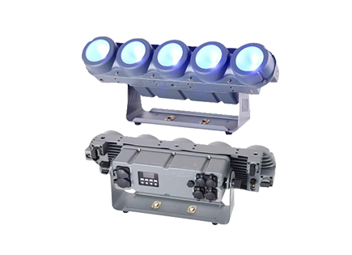
BL300-IP Outdoor Blinder
Atmospheric Effects
LOOK Solutions Boa 64 — Outdoor Fog Generator
- Power: 3,100W
- IP64 outdoor-rated
- Max output projection: 25m
- Fluid tank: 5 liters
- Ultra-silent nozzle system
- RDM capable
- Designed for large-scale stage atmospherics
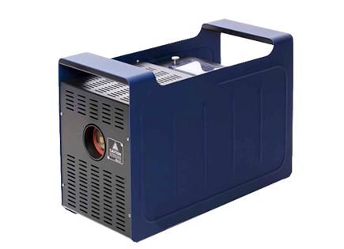
LOOK Boa 64 Fog Machine
LOOK Solutions Unique 2.1 — Professional Hazer
- Power: 1,500W
- Fluid tank: 2 liters
- Up to 50 hours continuous output (2L)
- Adjustable density (99 steps)
- DMX controllable
- Minimal warm-up time (60 sec)
- Optimized for enhancing beam & laser visibility
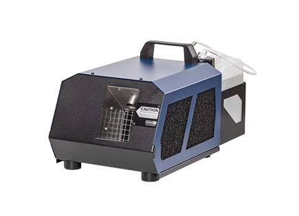
LOOK Unique 2.1 Hazer
Lighting Show Files & Patch Documentation
- Avolites Show File: ain_dubai_avolites_showfile
- GrandMA2 Show File: ain_dubai_ma2_showfile
- GrandMA3 Show File: ain_dubai_ma3_showfile
- Avolites Patch Report (PDF): avolites_patch_report.pdf
Ain Dubai Plaza Stage — Technical Rider
3. Audio System
3 — Audio System Overview
The Ain Dubai Plaza Stage features a fully distributed, Dante-enabled immersive pole-based sound system
designed for 360° audience coverage, high speech intelligibility, and controlled low-frequency performance
in an outdoor coastal environment. The system is engineered for live performances, corporate events, DJ shows,
public announcements, and show playback integration with media servers. Signal transport is handled via Dante
over managed Gigabit infrastructure to ensure low latency and high reliability.
| Component | Per pole | Total (6 poles) |
|---|---|---|
| Audio poles | — | 6 |
| Amplifiers | 2 | 12 |
| Subwoofers | 2 | 12 |
| Surround top speakers | 6 | 36 |
| Long-throw / center speakers | 2 | 12 |
| Total amplified outputs | — | 48 top speakers + 12 subs |
Dante architecture and control
- Dante-based immersive pole system for even 360° coverage and speech intelligibility
- Central rack: Yamaha TF-Rack with full Dante integration
- Managed Gigabit switch with QoS prioritization and Cat6 structured cabling
- Per-pole amplification: Amplifier 1 feeds surround tops; Amplifier 2 feeds long-throw + sub channel
- Connectivity standards: Neutrik EtherCON (Dante), PowerCON (power), 4-pole SpeakON (speaker)
- Minimum impedance requirement: not less than 4 ohms
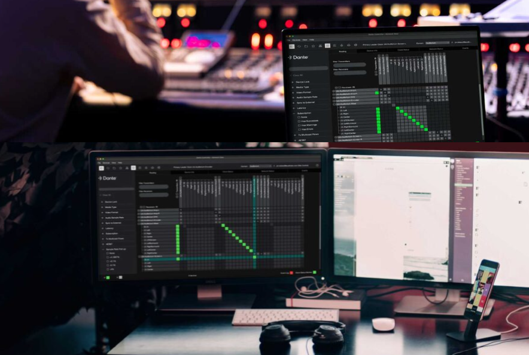
Distributed pole-based audio (placeholder)
Loudspeaker & Amplification (Core Models)
Marine-grade loudspeakers and high-output subwoofers are deployed per pole for consistent coverage,
strong low-frequency reinforcement, and long-term reliability in harsh outdoor conditions.
Top Loudspeakers — Wet Sounds REV8WFCSS
- 8" marine-grade coaxial speaker
- 200 W RMS / 400 W Peak
- Weather-resistant outdoor construction
- Wide dispersion for even audience coverage
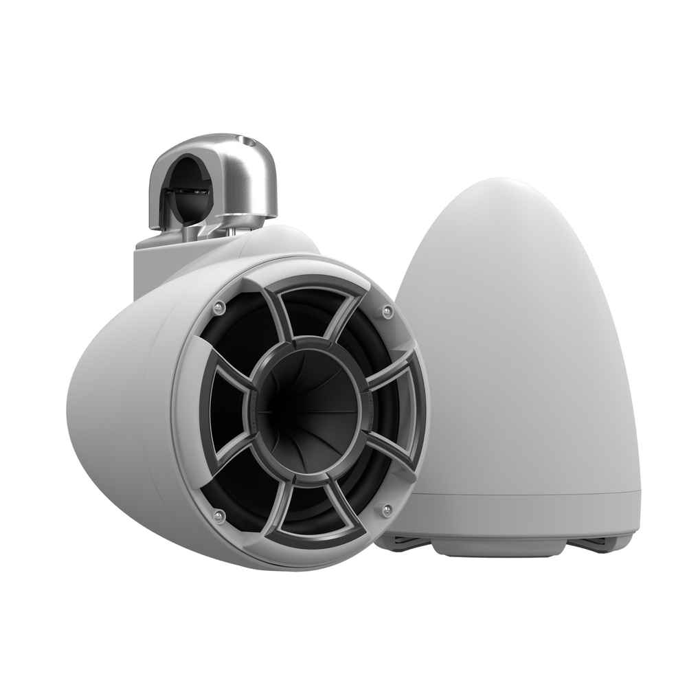
Top speaker (placeholder)
Subwoofers — Wet Sounds REVO 12 XXX V4-B
- 12" high-excursion driver
- 1200 W RMS / 2400 W Peak
- Designed for high SPL outdoor performance
- Integrated within pole cabinet installation
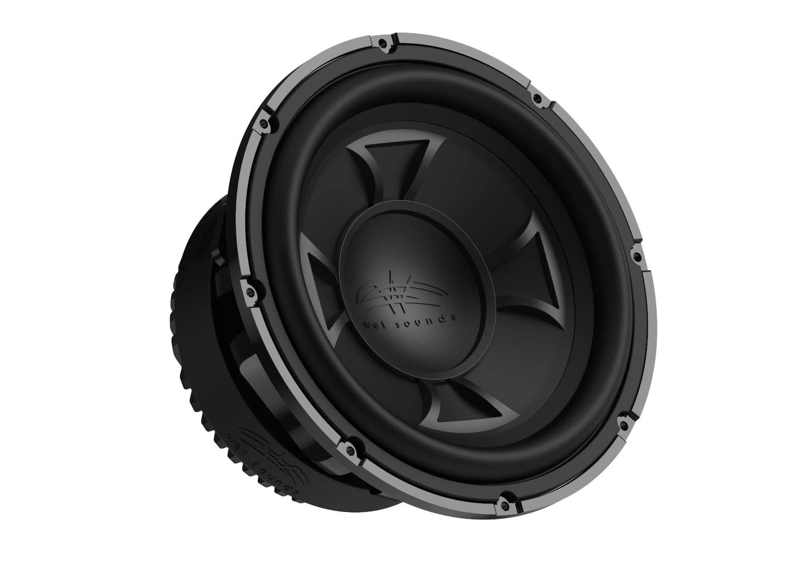
Subwoofer (placeholder)
Amplification System (Per Pole)
- Two dedicated amplifier units per pole
- Amplifier 1: feeds 6 surround top speakers
- Amplifier 2: feeds 2 long-throw speakers and subwoofer channel
- Dante input via Neutrik EtherCON
- Power input via PowerCON
- Speaker output via 4-pole SpeakON
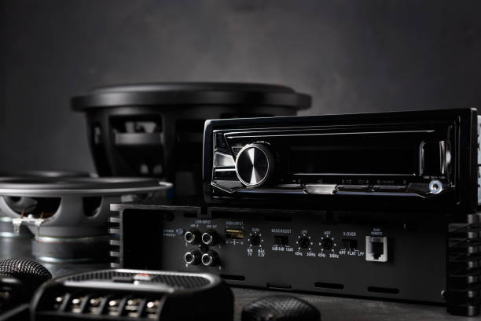
Amplifier units (placeholder)
Mix & Network Core
- Mix console: Yamaha TF-Rack (rack-mounted, Dante-ready)
- Audio networking: Managed Gigabit switch with QoS for Dante
- Control: Dante Controller software (system monitoring and routing)
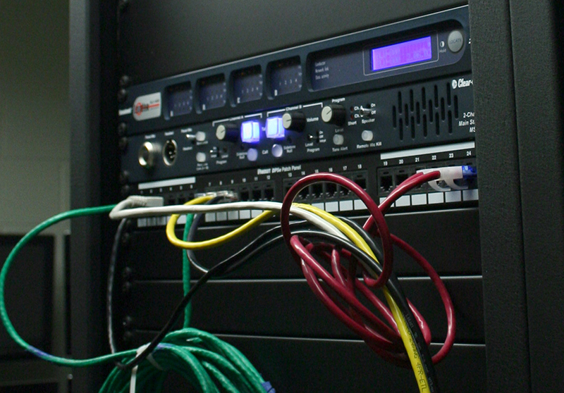
Control rack & networking (placeholder)
Microphone kit
| Equipment | Qty |
|---|---|
| Shure Beta 58 | 5 |
| Shure SM57 | 5 |
| AKG C1000S | 4 |
| AKG Drum Microphone Set | 1 |
| Radial Mono DI | 6 |
| Radial Stereo DI | 4 |
Mics and DI (placeholder)
Wireless, comms, and interface
- Wireless lavalier system: Sennheiser EW-DX MKE2 (2 lavaliers)
- Wireless handheld system: Sennheiser EW-DX 835-S (4 handheld mics)
- Intercom: Hollyland Solidcom C1 Pro HUB-8S (8-set full-duplex)
- Audio interface: RME Fireface UFX III
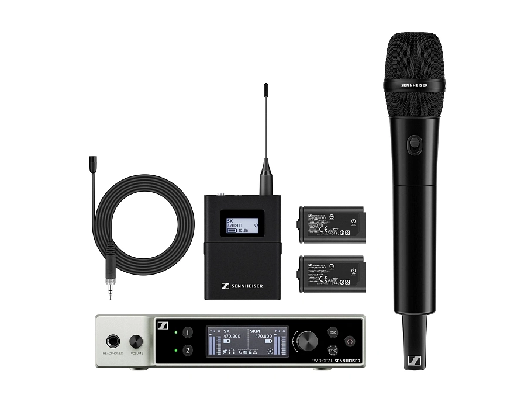
Wireless & interface rack (placeholder)
Ain Dubai Plaza Stage — Technical Rider
4. LED Screens & Processing
4 — LED Screens System Overview
Ain Dubai Plaza Stage features two large-scale, outdoor-rated LED display systems:
a high-resolution curved LED screen for premium branding and high-impact visuals,
and a transparent mesh LED screen designed for mapped content and immersive architectural effects.
Both systems are engineered for coastal outdoor conditions and are integrated with the show control
and media server infrastructure for synchronized playback, live feeds, and event programming.
| System | Key Specs |
|---|---|
| Curved LED Screen | 2.9mm • 60.5 sqm • 6720 × 1344 px • Outdoor curved build |
| Transparent Mesh LED | 15.625 (V) / 31.25 (H) • 117 sqm • 480 × 576 px • 67% transparency |
| Video Processing | NovaStar H2 • up to 6.5M pixels • 10× Ethernet outputs • SDI/HDMI/DVI |
| Media Server | Pixera-based playback • integrated with lighting/audio show control • redundant-ready |
Curved LED Screen — premium branding & show visuals (placeholder)
Curved LED Screen — Technical Specifications
- Screen Type: Outdoor Curved LED Screen
- Pixel Pitch: 2.9 mm
- Screen Area: 60.5 sqm
- Resolution: 6720 × 1344 px (native)
- Physical Size: 20,000 mm (flat) / 17,558 mm (front) × 4,000 mm (H)
- Cabinet Curvature: 2.5° per 500 mm cabinet
- LED Panel Series: BESD XR Series (outdoor-rated)
- Brightness: 4,000 nits
- Refresh Rate: 3840 Hz
- Grayscale Processing: 16-bit

Curved screen grid / plan (placeholder)
Curved Screen Content Delivery (Recommended)
- Native Resolution: 6720 × 1344
- Preferred Codec: NotchLC
- Container: MOV
- Frame Rate: Match show system standard
- Delivery: Media server integration for synchronized show playback

Content delivery workflow (placeholder)
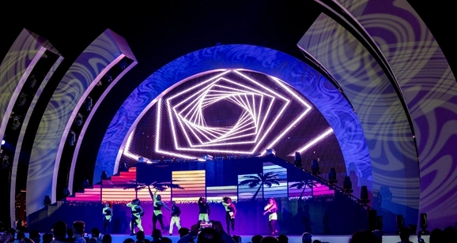
Transparent Mesh LED — mapped visuals & architectural effects (placeholder)
Transparent Mesh LED — Technical Specifications
- Screen Type: Transparent LED Mesh
- Pixel Pitch: 15.625 (V) / 31.25 (H)
- Screen Area: 117 sqm
- Resolution: 480 × 576 px (native)
- Physical Size: 15,000 × 9,000 mm
- Transparency: 67%
- LED Panel Series: BESD C15-31 Series (outdoor mesh)
- Brightness: 8,000 nits
- Refresh Rate: 10,000 Hz
- Grayscale Processing: 16-bit
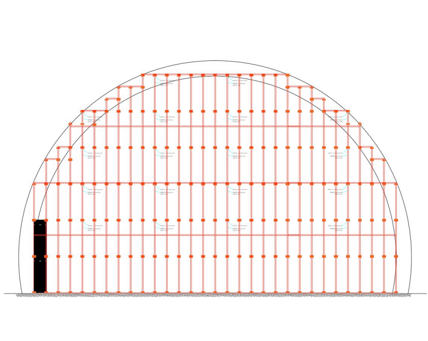
Mesh LED detail (placeholder)
Mesh Screen Content Delivery (Recommended)
- Native Resolution: 960 × 576
- Preferred Codec: NotchLC
- Container: MOV
- Frame Rate: Match show system standard
- Designed for: Mapped transparent visuals and architectural content
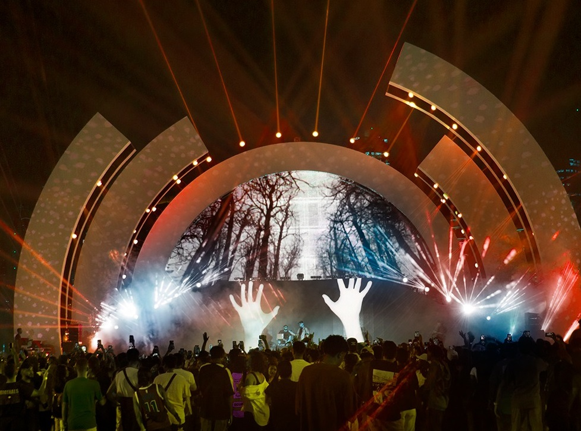
Mapped visuals concept (placeholder)
Video Processing & Control — NovaStar H2
- Loading capacity: up to 6.5 million pixels per unit
- Outputs: 10× Ethernet outputs
- Inputs: SDI / HDMI / DVI
- Control: Preset management and layer control
- Integration: Show-control ready for events and scheduled programming
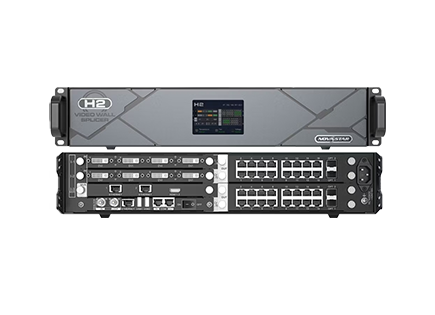
Processing rack (placeholder)
Media Server Infrastructure — Pixera
- Pixera-based playback system for reliable show content delivery
- Integrated with lighting and audio show control for synchronization
- Redundant-ready architecture for mission-critical events

Pixera playback & control (placeholder)
Documentation & Files
- Curved Screen Grid Drawing (PDF): curved_screen_grid.pdf
- Mesh Screen Grid Plan (PDF): mesh_screen_grid.pdf
Ain Dubai Plaza Stage — Technical Rider
5. Control Room & Backstage Facilities
Control Room Overview
The Ain Dubai Plaza Stage control room serves as the central technical hub for audio,
lighting, and video system management. Designed for professional show operation,
it enables coordinated control of all production elements during live events,
corporate activations, and scheduled programming.
Audio Control Infrastructure
- Primary mix console: Yamaha TF-Rack (Dante-enabled)
- Digital Audio Network: Dante over managed Gigabit switch
- Centralized routing via Dante Controller software
- Integrated monitoring and system management
- Direct connectivity to pole amplification network

Control Room (replace with actual photo)
Lighting & Video Integration
- Avolites lighting control system integration
- ArtNet / DMX distribution infrastructure
- Pixera media server integration for LED content playback
- NovaStar H2 LED processing system control
- Network-based show synchronization

Control Rack & Networking
Green Room & Backstage Facilities
Dedicated backstage facilities are available to support performers, artists,
and production teams. The area is positioned for convenient access to stage
while maintaining privacy and operational efficiency.
Artist Support Facilities
- Dedicated green room space
- Direct access to stage entry points
- Power outlets and technical support access
- Coordination with technical and stage management team
- Suitable for concerts, corporate speakers, and performance groups

Green Room (replace with actual photo)